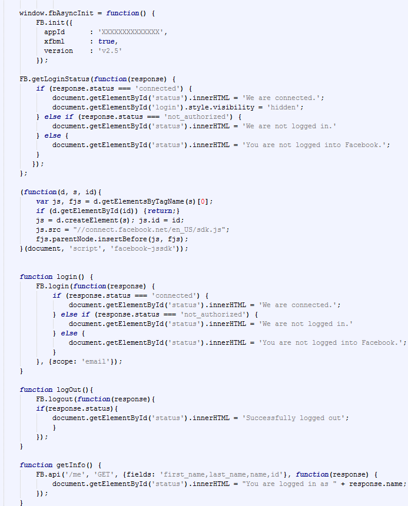

The  API how to guide
API how to guide
Created by Alexander Laquitara for OSU CS 290 Web Development.
Facebook login credentials
Learn to use Facebook login credentials on your own app or webpage.
The first step to understanding the facebook login portion of the API is knowing the different login statuses. They are as follows:
- The user is logged in and is authenticated. This status is called connected.
- The user is logged in but is not authenticated. This status is called not_authorized.
- The user is not logged in or has logged out. This status is called unkown
In order to "get" or test the status of the user, we use the FB.getLoginStatus() function. I'll demonstrate below how this could be used.
Here is an example of a very simple function to test whether a user is connected via facebook login. The function tests the user login status and returns a message accordingly.
FB.getLoginStatus(function(response) { if (response.status === 'connected') { document.getElementById('status').innerHTML = 'connected.'; } else if (response.status === 'not_authorized') { document.getElementById('status').innerHTML = 'not connected.'; } else{ document.getElementById('status').innerHTML = 'You are not logged into Facebook.'; } });
Now that we know how to check login status, lets apply this to a login button.
Login Button:
This is going to look much similar to the code used above to check status.
Noice here the only change with the function call at the top, here we swapped out FB.getLoginStatus() for FB.login() . So instead of returning a status, this function is now communicating with facebook and allowing the user to actually login to the service.
Lastly we need to know how to logout. What good is logging in if this isn't an option? The logout fuction is simply FB.logout()
Putting it all together.
So know that we know how to get status and call the login function, lets put it all together and create a login user interface.
Facebook only allows secure cavas URL's so I will not be able to demonstrate with JS fiddle. Below you will see the Javascript followed by the a working example.
One new addition exists here that has not been talked about earlier and that is the the getInfo() function.
I made three buttons to coorespond with these functions like this:
The final result looks like this!
Clicking on the Login button will prompt a facebook login. Once logged in the Get Info Button displays the user name. I was able to access the user name via the FB.api function . There are many other member variables such as first name, last name, ID ECT. The documentation can be found here .
You may have noticed a share option at the top of the page. Now that we are able to log in and out of facebook feel free to share this page.
Next we will go into more depth on sharing and posting